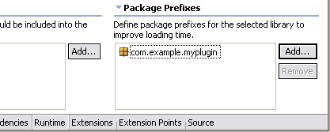

[This section should make interesting bathroom reading for an end user of Eclipse 2.1. It should give them bits of advice on how to use Eclipse effectively. It should stay away for things that a user would naturally discover while using Eclipse, and instead focus on high-value things that they might not have noticed. It also differs in tone from the "New for 2.1" section in that it deals with anything in 2.1, not just the new stuff. Each item should stand by itself (as they would have to if we had a "Tip of the Day" facility).]
[This section needs work. The material here is lifted from the M2 through M5 "New and Noteworthy" bulletins. Some of the items might make good Tips and Tricks.]
|
|
|
| Support for feature-based self-hosting | The current method of self-hosting in Eclipse
is plug-in-based. PDE launches a second run-time workbench instance by
passing an array of plug-ins that it should load. A regular Eclipse
product is feature-based: during startup, it checks all the features that
should be active, computes plug-ins that belong to those features, and
passes the result for loading.
This difference in behavior makes it complicated to self-host in scenarios where a full startup that involves features is required. PDE now supports this scenario if care is taken with the setup:
If all these conditions are met, the runtime Eclipse instance will be launched in a way that is the closest possible approximation of a normal Eclipse startup. This facilitates testing About dialogs and other aspects that may depend on the set of installed features. |
| Plug-in dependency extent | You can now discover the extent to
which one plug-in depends on another. The Compute Dependency Extent operation
found on the context menu in several contexts (including manifest file
Dependencies page and Dependencies view) performs a combined Java and
plug-in search to find all external types and extension points referenced
by the plug-in. When a type is selected in the Search results view, the References
in MyPlugIn action in the context menu searches for the places
in the plug-in where the selected type is referenced.
The dependency extent facility is useful for identifying cases of extra required plug-ins (0 types found), and aiding code refactoring between plug-ins. |
| Plug-in dependencies view | A new view can be opened by
selecting a plug-in manifest file ( plugin.xml) and choosing Open
Dependencies from the context menu. This view allows you to browse the
plug-ins it requires, the ones they require, and so on. |
| Searching other plug-ins | Select a plug-in in the Plug-ins view and choose Add to Java Search from the context menu to include the plug-in's JAR libraries in Java searches. This is handy for remaining aware of other plug-ins that depend on ones you're working on. |
| Plug-in searches | PDE now contributes a Plug-in Search tab on the Search dialog so that you can search for plug-ins, fragments, and extension points. |
| Plug-ins should declare package prefixes | A significant (10-15%) speed
increase in the time to load a plug-in's classes can be obtained simply by
declaring the package name prefixes found in that plug-in's runtime
library JARs. This is done in the new Package Prefixes section of the
Runtime page in the PDE plug-in manifest editor. (Further information here.)
 |